Smooth trends and repeated measurements with glmmTMB
Source:vignettes/articles/glmmTMB-support.Rmd
glmmTMB-support.RmdA smooth describes a relationship without requiring it to be linear. glmmTMB can estimate these relationships alongside its other model components, and gratia can now extract and display their effects. The examples below ask how annual river flow changes over time and how plants respond to increasing carbon dioxide concentration. The second example also accounts for measurements on the same plant.
This article needs the optional package glmmTMB, with support for
mgcv::s() terms; the examples require glmmTMB 1.1.15.2 or
later and mgcv 1.9-4. Smooth fitting remains experimental in glmmTMB.
Its fitting
documentation recommends REML = TRUE. Use an
unqualified s() in the formula after attaching mgcv, rather
than replacing the smooth with an unpenalised spline basis. The
smoothing penalty is estimated during fitting.
How did the mean annual flow of the Nile change?
The Nile
data contain 100 annual flow measurements at Aswan from 1871 to
1970, measured in units of 10^8 cubic
metres. The question here is descriptive: what broad change in mean flow
is supported by these observations? We adapt the smooth example in the
glmmTMB documentation, name the variables year and
flow, and fit the same spline with mgcv for comparison.
nile <- data.frame(
year = as.numeric(time(Nile)),
flow = as.numeric(Nile)
)
ggplot(nile, aes(year, flow)) +
geom_point() +
labs(x = "Year", y = expression(Annual ~ flow ~ (10^8 ~ m^3)))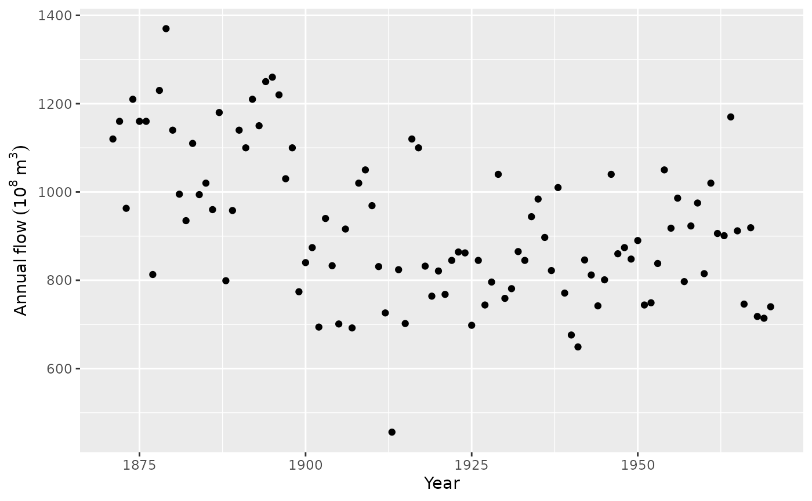
Annual flow is continuous. A Gaussian model is a reasonable starting point for departures around a smooth mean, provided its residual spread is reasonably stable. The observations are a time series, so independence needs checking; year appearing in a smooth does not itself model residual serial dependence.
nile_gam <- gam(flow ~ s(year, k = 10), data = nile, method = "REML")
nile_tmb <- glmmTMB(flow ~ s(year, k = 10), data = nile,
family = gaussian(), REML = TRUE, start = list(theta = 5))
summary(nile_tmb)
#> Family: gaussian ( identity )
#> Formula: flow ~ s(year, k = 10)
#> Data: nile
#>
#> AIC BIC logLik -2*log(L) df.resid
#> 1265.7 1276.1 -628.8 1257.7 96
#>
#> Random effects:
#>
#> Conditional model:
#> Groups Name Variance Std.Dev.
#> dummy dummy1 81075 284.7
#> Residual 19000 137.8
#> Number of obs: 100, groups: dummy, 1
#>
#> Dispersion estimate for gaussian family (sigma^2): 1.9e+04
#>
#> Conditional model:
#> Estimate Std. Error z value Pr(>|z|)
#> (Intercept) 919.35 13.78 66.70 <2e-16 ***
#> s(year)1 99.30 86.34 1.15 0.25
#> ---
#> Signif. codes: 0 '***' 0.001 '**' 0.01 '*' 0.05 '.' 0.1 ' ' 1k = 10 sets the size of the available spline basis,
rather than fixing ten effective degrees of freedom. The fitted penalty
discourages unnecessary wiggliness. start follows the
package’s Nile example and supplies an initial log standard deviation
for the spline’s random coefficients; it does not fix their fitted
variance. The dummy random effect in the printed summary is
part of the spline representation, not an additional sampled group.
Extract the trend and read its uncertainty
smooths(nile_tmb)
#> [1] "s(year)"
head(smooth_coefs(nile_tmb, select = "s(year)"))
#> s(year).1 s(year).2 s(year).3 s(year).4 s(year).5 s(year).6
#> 18.174609 -115.231114 -2.991595 -24.387354 -15.572794 13.125102
trend <- smooth_estimates(nile_tmb, select = "s(year)",
interval = "credible")
head(trend)
#> # A tibble: 6 × 9
#> .smooth .type .by .estimate .se year .crit .lower_ci .upper_ci
#> <chr> <chr> <chr> <dbl> <dbl> <dbl> <dbl> <dbl> <dbl>
#> 1 s(year) TPRS NA 226. 49.6 1871 1.96 129. 323.
#> 2 s(year) TPRS NA 220. 46.3 1872 1.96 129. 311.
#> 3 s(year) TPRS NA 214. 43.2 1873 1.96 129. 299.
#> 4 s(year) TPRS NA 208. 40.4 1874 1.96 129. 287.
#> 5 s(year) TPRS NA 202. 37.8 1875 1.96 128. 276.
#> 6 s(year) TPRS NA 196. 35.6 1876 1.96 127. 266.
draw(trend, xlab = "Year", ylab = expression(Flow ~ contribution ~ (10^8 ~ m^3)))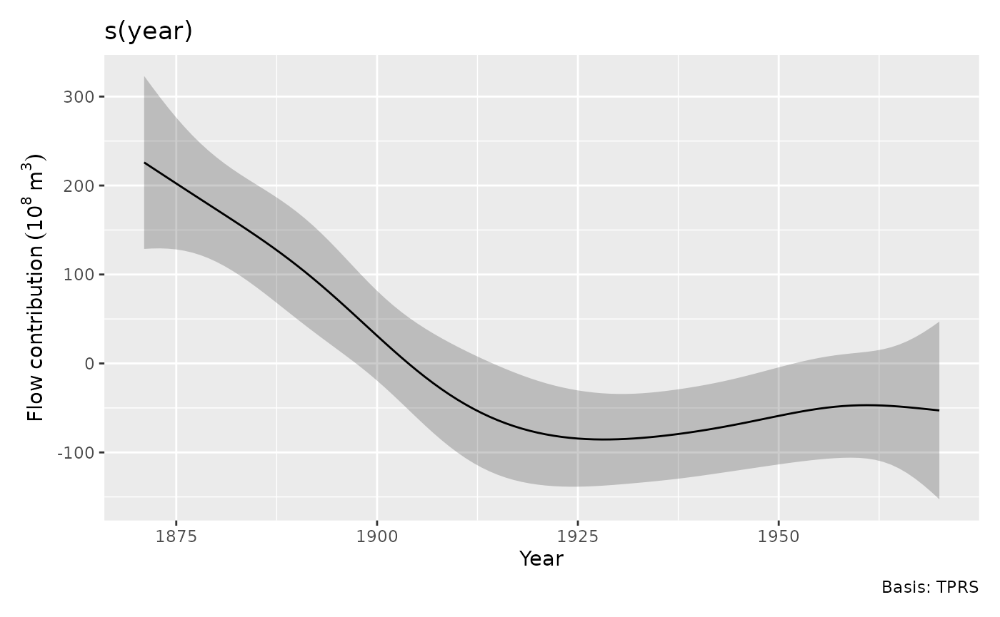
The curve is the smooth’s contribution relative to its centring constraint, not the full expected flow. Positive values indicate flow above the fitted intercept. The broad decline from the late nineteenth century to the early twentieth century is much clearer than the small subsequent undulations. The shaded region concerns uncertainty in the fitted mean contribution; it does not describe the spread of individual annual observations.
The default interval uses the joint TMB covariance, transformed back
to the mgcv smooth coefficients. It includes covariance between fixed
and fitted random coefficients. This is not mgcv’s frequentist
covariance or its optional correction for uncertainty in smoothing
parameters: frequentist = TRUE and
unconditional = TRUE are unavailable for glmmTMB
effects.
At any particular year a pointwise interval is useful. If the claim concerns the entire plotted trend, ask for a simultaneous band instead:
draw(nile_tmb, select = "s(year)", interval = "simultaneous",
n = 120, n_sim = 3000, seed = 71,
xlab = "Year", ylab = expression(Flow ~ contribution ~ (10^8 ~ m^3)))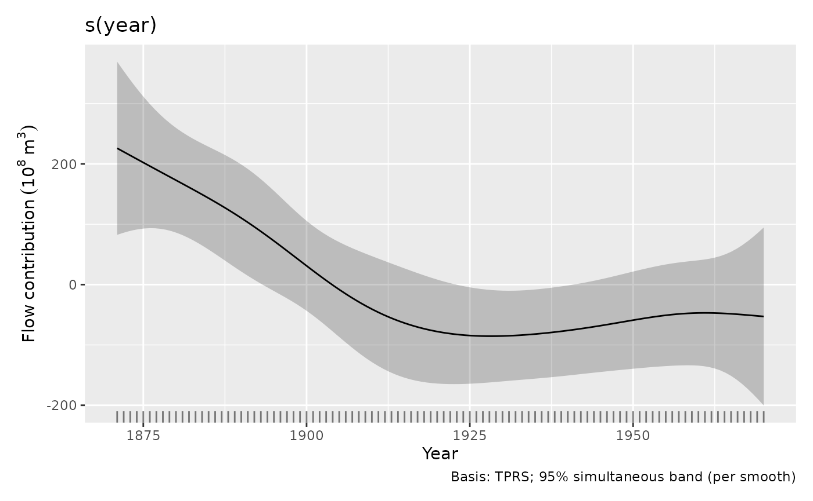
The wider band has approximate coverage over the finite evaluation
grid of this smooth. It is not a prediction interval, and it does not
claim joint coverage across all model terms.
interval = "credible" is an alias for the pointwise
"confidence" option. With mgcv models,
smooth_estimates() also allows
frequentist = TRUE; that changes the covariance used,
rather than changing a pointwise statement into a simultaneous one.
get_vcov() makes the chosen model covariance available for
custom calculations.
For the full expected flow, add the intercept. Here the model has just one smooth and an identity link, so this gives a direct comparison with both packages’ predictions:
year_grid <- data.frame(year = seq(1871, 1970, length.out = 120))
full_trend <- smooth_estimates(nile_tmb, data = year_grid,
interval = "credible")
full_trend$mean_flow <- full_trend$.estimate + unname(fixef(nile_tmb)$cond[1])
full_trend$lower <- full_trend$.lower_ci + unname(fixef(nile_tmb)$cond[1])
full_trend$upper <- full_trend$.upper_ci + unname(fixef(nile_tmb)$cond[1])
full_trend$mgcv_mean <- as.numeric(predict(nile_gam, newdata = year_grid))
ggplot(full_trend, aes(year, mean_flow)) +
geom_point(data = nile, aes(y = flow), alpha = 0.5) +
geom_ribbon(aes(ymin = lower, ymax = upper), alpha = 0.2) +
geom_line() +
geom_line(aes(y = mgcv_mean), colour = "steelblue", linetype = 2) +
labs(x = "Year", y = expression(Annual ~ flow ~ (10^8 ~ m^3)),
subtitle = "glmmTMB mean and interval; dashed blue line is the mgcv mean")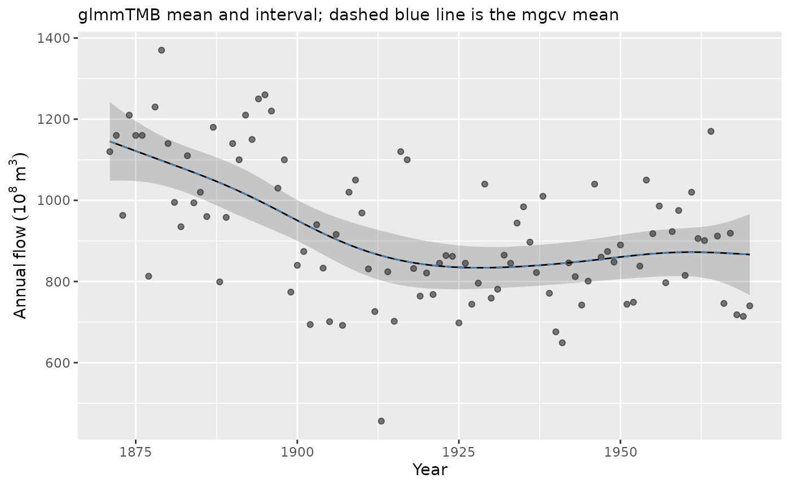
overall_uncertainty = TRUE, the default, includes
uncertainty in the model constant in the smooth’s standard errors.
Adding the intercept to the displayed values therefore gives appropriate
mean intervals for this one-smooth model. For a model with several
terms, adding only the intercept would leave out the other
contributions; use predictions from the full model instead. The two mean
curves almost coincide here because the models use the same Gaussian
likelihood and spline penalty. Such agreement is not expected
automatically for non-Gaussian fits or more complex random-effect
structures.
For the mgcv fit, we can compare the two covariance choices at years of interest while leaving the estimated trend unchanged:
comparison_years <- data.frame(year = c(1880, 1920))
bayesian_effect <- smooth_estimates(nile_gam, data = comparison_years)
frequentist_effect <- smooth_estimates(nile_gam, data = comparison_years,
frequentist = TRUE, interval = "confidence")
data.frame(year = comparison_years$year,
contribution = bayesian_effect$.estimate,
bayesian_se = bayesian_effect$.se,
frequentist_se = frequentist_effect$.se)
#> year contribution bayesian_se frequentist_se
#> 1 1880 172.99113 29.51978 28.36395
#> 2 1920 -77.82668 25.22793 22.21411
gam_covariance <- get_vcov(nile_gam, frequentist = TRUE)The frequentist covariance concerns sampling variability of the penalised coefficient estimator with smoothing parameters held fixed. Smaller standard errors do not account for the bias introduced by penalisation. The default approximate Bayesian covariance is usually the useful starting point for smooth-effect intervals. The final line extracts the chosen covariance for custom calculations.
Does the fitted distribution explain variation around the trend?
appraise(nile_tmb, type = "pearson", method = "simulate",
n_simulate = 100, seed = 72)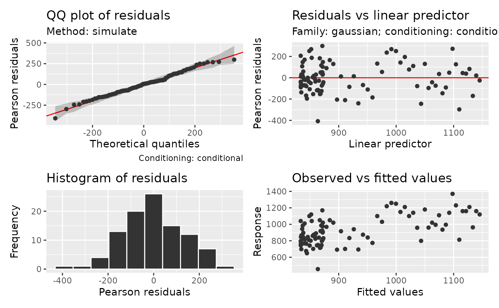
residual_correlation_plot(nile_tmb, type = "pearson", lag_max = 15)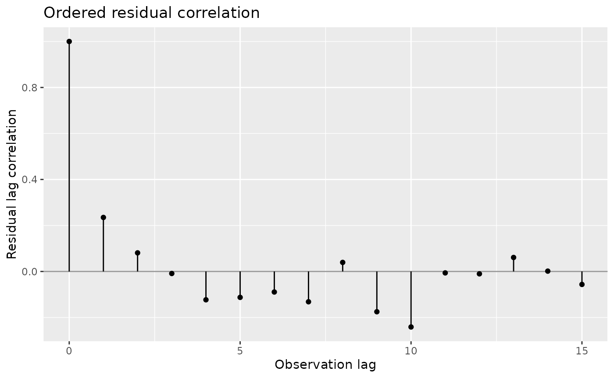
The panel uses glmmTMB’s native Pearson residuals. For this Gaussian fit they remain on the scale of the flow response, rather than standard-normal scores. Simulated QQ references hold the fitted smooth fixed and generate new annual responses. They check the response distribution under this fitted model; they do not refit the trend. The separate autocorrelation plot asks whether successive departures still resemble one another. Its correlations describe ordered residual structure, with no significance bands that assume independent residuals. Lags are observation positions; here each position corresponds to one year.
Most of the QQ points follow their simulated reference, with the lowest-flow observation standing out in the lower tail. The serial-correlation plot checks whether neighbouring years have similar departures from that distribution.
The residual correlation at lag one is about 0.24, with much smaller correlation at lag two. Some adjacent-year structure remains after removing the smooth trend. A time-series model can represent that remaining correlation when estimating trend uncertainty. The smooth describes a broad decline in mean flow, while the residual check identifies variation that its independent Gaussian errors leave unexplained. See Choosing diagnostic references for checks of dependence and for the distinction between holding effects fixed, drawing their uncertainty and simulating new effects.
Do repeated measurements change how we read plant responses?
The CO2 experiment recorded carbon dioxide uptake by
twelve plants of Echinochloa crus-galli at seven
concentrations. Plants came from Quebec or Mississippi and received
chilled or nonchilled treatment. See ?datasets::CO2 for the
experiment and units. Uptake is positive, and a Gamma model with a log
link allows its residual variance to grow with the mean. Measurements
from one plant share individual characteristics. The 84 measurements
provide only twelve independently treated plants.
We use a shared smooth response to concentration, an origin-by-treatment interaction, and plant-specific intercepts and slopes. These slopes allow individual plants to differ in their response to concentration without assuming that the population response itself is linear.
plant <- as.data.frame(CO2)
plant$Plant <- factor(plant$Plant, ordered = FALSE)
plant$log_conc <- log(plant$conc) - mean(log(plant$conc))
plant_tmb <- glmmTMB(
uptake ~ Type * Treatment + s(log_conc, k = 5) + (1 + log_conc | Plant),
data = plant, family = Gamma(link = "log"), REML = TRUE)
summary(plant_tmb)
#> Family: Gamma ( log )
#> Formula:
#> uptake ~ Type * Treatment + s(log_conc, k = 5) + (1 + log_conc | Plant)
#> Data: plant
#>
#> AIC BIC logLik -2*log(L) df.resid
#> 454.1 478.4 -217.0 434.1 74
#>
#> Random effects:
#>
#> Conditional model:
#> Groups Name Variance Std.Dev. Corr
#> dummy dummy1 0.532393 0.72965
#> Plant (Intercept) 0.013376 0.11565
#> log_conc 0.007544 0.08685 0.36
#> Number of obs: 84, groups: Plant, 12; dummy, 1
#>
#> Dispersion estimate for Gamma family (sigma^2): 0.0067
#>
#> Conditional model:
#> Estimate Std. Error z value Pr(>|z|)
#> (Intercept) 3.50826 0.06743 52.03 < 2e-16 ***
#> TypeMississippi -0.31784 0.09327 -3.41 0.000655 ***
#> Treatmentchilled -0.13966 0.09931 -1.41 0.159638
#> TypeMississippi:Treatmentchilled -0.27192 0.18888 -1.44 0.149972
#> s(log_conc)1 0.46392 0.04158 11.16 < 2e-16 ***
#> ---
#> Signif. codes: 0 '***' 0.001 '**' 0.01 '*' 0.05 '.' 0.1 ' ' 1For non-Gaussian responses, glmmTMB recommends simulations for the intended design to check REML estimates and interval coverage.
The centred log concentration improves the interpretation of plant intercepts: they apply at the geometric mean concentration. The shared curve represents rapid change at low concentrations and slower change at high concentrations. The treatment interaction allows its shift in log mean uptake to differ by origin. With only three plants in each origin-treatment combination, the treatment estimates remain uncertain.
draw(plant_tmb, ncol = 2)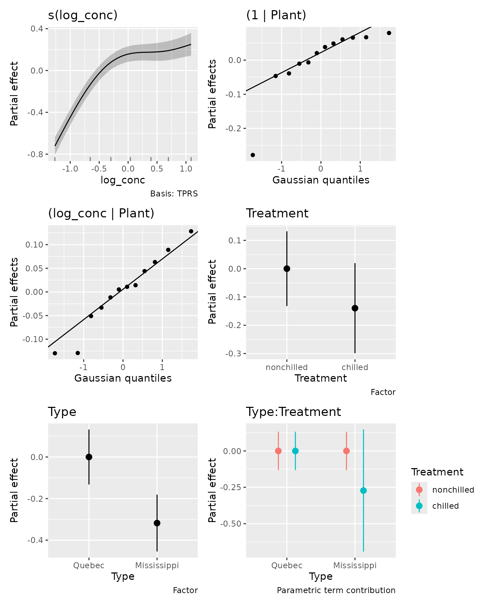
draw() includes smooths, native random effects and
parametric effects by default. The Gaussian QQ panels for plant
intercepts and slopes show fitted plant deviations, not response
residuals. The random coefficients that encode the spline are excluded
from these panels. parametric = FALSE omits parametric
panels; an explicit select draws only selected effects
unless parametric = TRUE is also supplied.
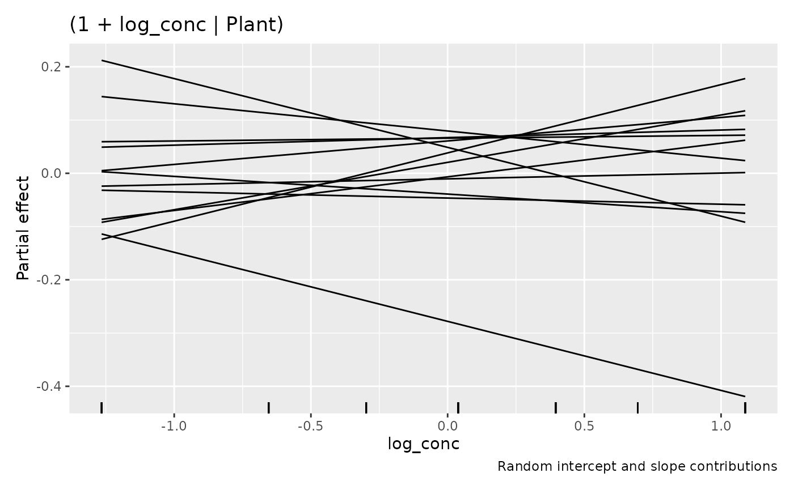
These lines are each plant’s random contribution b_{0j} + x b_{1j} on the log scale. They do not include the shared curve or treatment means and have no uncertainty bands. This display requires a simple numeric intercept-slope pair from the same formula term. Multiple slopes, transformed or factor slopes, and structured covariance terms retain separate QQ panels.
The interaction deserves a focused view rather than interpreting two main effects separately:
parametric_terms(plant_tmb)
#> Type Treatment Type:Treatment
#> "Type" "Treatment" "Type:Treatment"
draw(parametric_effects(plant_tmb, terms = "Type:Treatment"))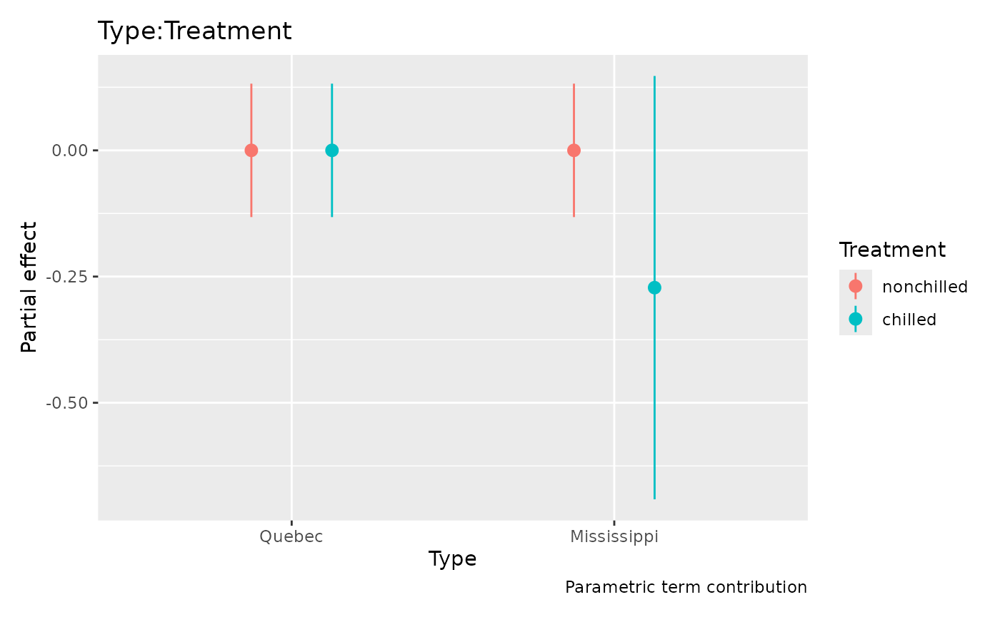
These are contrast-coded partial contributions on the log scale.
Contrast coding gives the reference category a zero contribution; full
predictions add the intercept and the other model terms. Parametric
intervals now include intercept uncertainty and its covariance with the
term by default; use overall_uncertainty = FALSE for
uncertainty in the term alone. The estimated partial contributions do
not change. Full predictions combine all terms:
plant$expected <- as.numeric(predict(plant_tmb, type = "response"))
ggplot(plant, aes(conc, uptake, group = Plant, colour = Treatment)) +
geom_point() +
geom_line(aes(y = expected)) +
facet_wrap(~ Type) +
labs(x = "Carbon dioxide concentration (mL/L)",
y = expression(CO[2] ~ uptake ~ (mu * mol ~ m^{-2} ~ s^{-1})))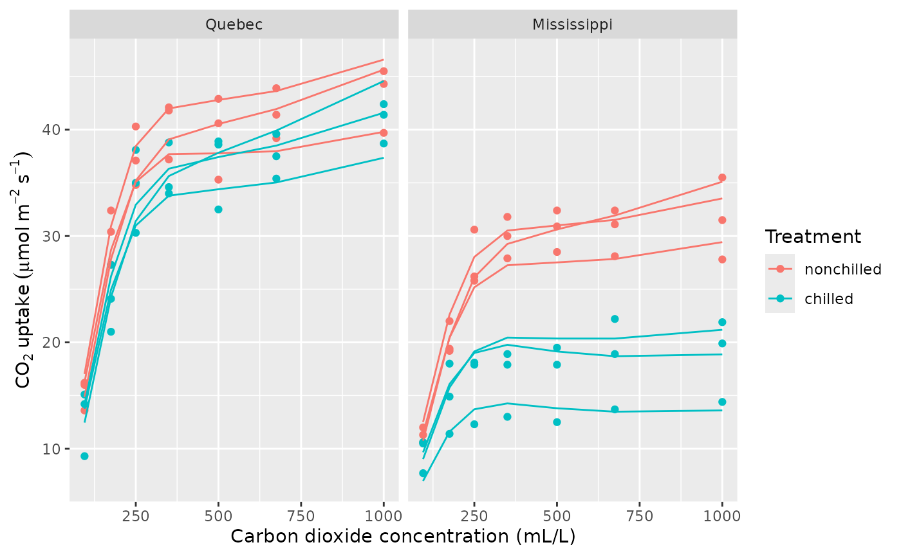
The curves describe these observed plants, including their fitted deviations. They are not marginal mean curves for a new plant. The Gamma model and common nonlinear shape are working assumptions that should be checked:
appraise(plant_tmb, type = "quantile", seed = 73)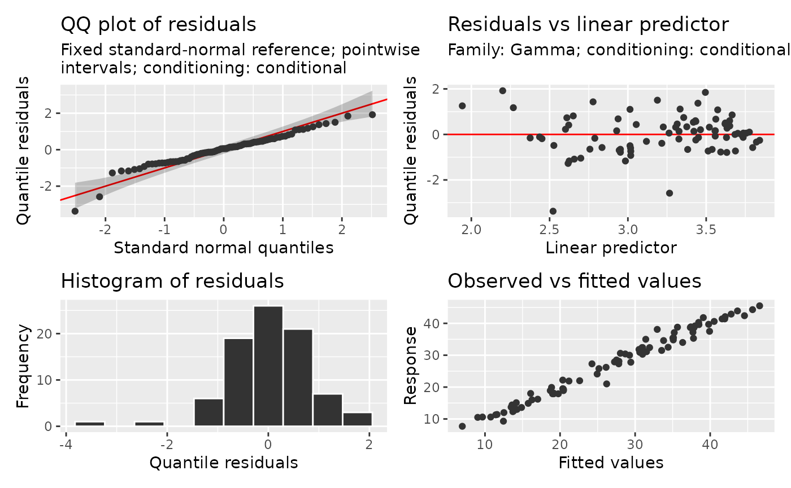
The lowest quantile score stands out below the normal reference: one measurement is substantially lower than its fitted distribution would typically produce. Inspect that observation and the fitted curve for its plant to decide whether its individual concentration response needs more flexibility. Read smooth effects, interactions and surfaces explores more flexible plant-specific curves.
A conditional check holds the fitted plant effects and smooth fixed.
Quantile residuals use a fixed standard-normal reference to assess the
distribution of individual scores conditional on those effects; the
reference does not preserve dependence between scores. A marginal check
instead draws new plant effects and new spline random
coefficients with glmmTMB’s simulator. It therefore checks a
broader distribution than that of new plants around a fixed shared
concentration curve. The same scope applies to marginal posterior
predictive checks. Conditional posterior predictive checks draw
uncertainty in fitted coefficients and effects together. These answer
different questions; see Choosing
diagnostic references. Partial-residual overlays are not supported
for glmmTMB smooth plots. For supported response families, model parts
and current limitations, consult ?"glmmTMB-methods".
Multiple linear predictors retain model-wide smooth selection and
identify the conditional, zero-inflation or dispersion model in their
plot subtitles; constant dispersion alone does not add these
subtitles.
gratia cannot make a smooth type available if glmmTMB cannot fit it.
Effects require the stored smooth and random-effect information;
unsupported structures with several penalties, models that fix or share
joint parameters through map, and rank-deficient smooth
models give explicit errors. For a GAM that does not require glmmTMB’s
additional model components, mgcv offers a broader range of spline
constructions.